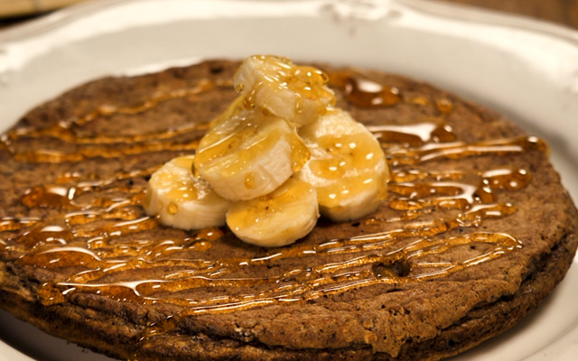
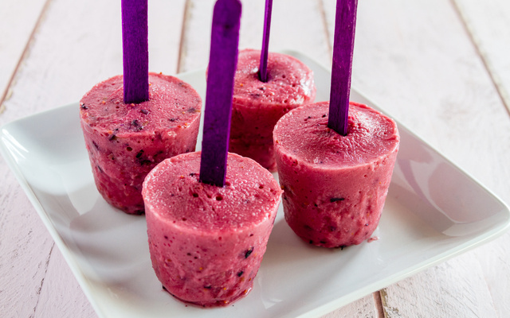
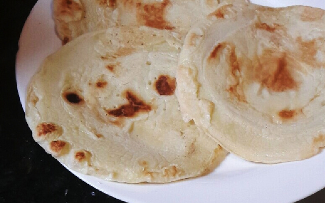

Adicione a goma de tapioca e bata novamente (pode bater com um garfo mesmo), até obter uma mistura homogênea.
Coloque todo o conteúdo em uma frigideira antiaderente levemente quente e mantenha em fogo baixo.
Deixe por alguns segundos e vire para dourar do outro lado.

Panqueca de banana
⏱ 15 min | 🍽 1 porção
Ingredientes
2 bananas
2 colheres de aveia
1 colher de cacau em pó 100%
2 ovos
Modo de Preparo
Amasse a banana, depois coloque em um recipiente fundo, bata com o garfo os 2 ovos junto com a banana, depois acrescente a aveia e o cacau.
Bata tudo com o garfo e depois coloque na frigideira untada e antiaderente, tampe a frigideira e vire após dourar.
Omelete
⏱ 15 min | 🍽 1 porção
Ingredientes
2 ovos
1 fatia de queijo
Sal
Tempero verde a gosto
Modo de Preparo
Bata os 2 ovos, pode ser na batedeira ou não.
Após ter batido bem, coloque-o na frigideira já untada com óleo, acrescente o sal e as duas fatias de queijo (não precisa picar o queijo).
Coloque os temperos a gosto, espere ficar firme, e vire o omelete.

Picolé de Frutas Vermelhas
⏱ 10 min | 🍽 4 porções
Ingredientes
1 xícara (chá) de framboesas congeladas
1 xícara (chá) de morangos congelados
1/2 xícara (chá) de suco de uva gelado
1/2 xícara (chá) de água gelada
Modo de Preparo
Bata todos os ingredientes no liquidificador até formar uma mistura homogênea.
Em seguida, coloque a mistura em forminhas de picolé e leve ao congelador até estarem firmes.

Pão de queijo de frigideira
⏱ 15 min | 🍽 1 porção
Ingredientes
1 ovo
1 clara
1 colher de sopa de água
2 colheres de sopa de polvilho doce
1 colher de sopa de polvilho azedo
1 colher de sopa do queijo de sua preferência
1 pitada de sal
Modo de Preparo
Bata todos os ingredientes no liquidificador.
Coloque em uma frigideira antiaderente, em fogo baixo, até cozinhar e soltar do fundo.